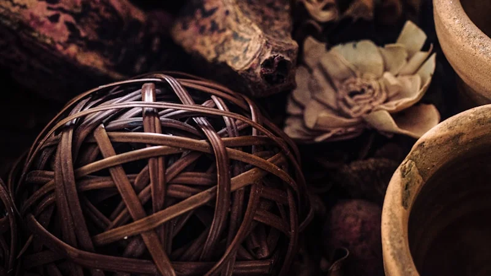
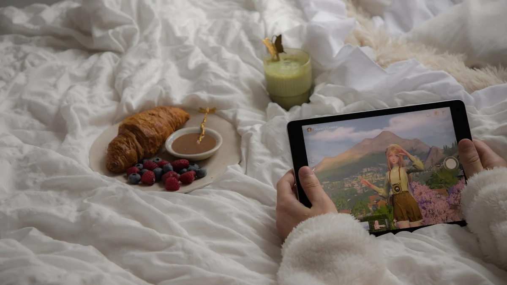
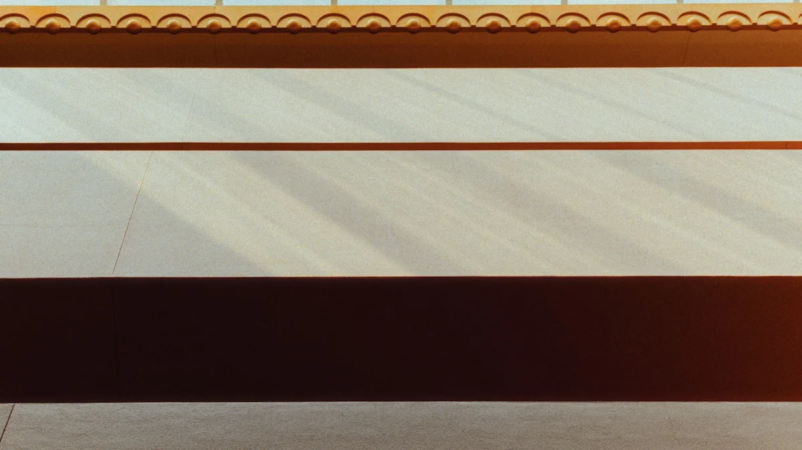

【東洋医学で紐解く】「布団に入っても手足が冷えて眠れない」朝から疲れているあなたへ。自律神経を整え芯から温まる温活養生ケア
2026.06.17

「疲れているはずなのに、布団に入っても足先が氷のように冷たくて寝付けない」「夜中に何度も目が覚めてしまい、朝起きた瞬間からすでに体が重く、疲労感が抜けていない」――そんな辛いスパイラルに陥っていませんか？
日中は仕事や家事に追われ、緊張状態が続いている現代人。夜になっても体と心が「お休みモード」に切り替わらず、手足の冷えと慢性的な疲労感を引き起こしているケースが非常に増えています。このような「なんとなく不調」が続く状態を、東洋医学では「未病（みびょう）」と呼び、放置すると本格的な体調不良へとつながってしまいます。今回は、東洋医学と自律神経の専門家として、この冷えと疲労の根本原因を解き明かし、明日からすぐに実践できる確かなセルフケア法をお伝えします。

なぜ「冷え」と「疲労」は同時にやってくるのか？体のメカニズムを紐解く
手足が冷えて眠れず、疲れが取れない最大の原因は、「自律神経の乱れ」と東洋医学でいう「気血（きけつ）の巡りの滞り」にあります。
私たちの体は、活発に動く昼間に「交感神経」が優位になり、リラックスする夜間に「副交感神経」が優位になることで、体温や血流をコントロールしています。しかし、ストレスや過労、スマートフォンの見過ぎなどによって夜間も交感神経が過剰に働き続けると、血管がキュッと収縮してしまいます。すると、血液が体の末梢（手足の先）まで届かなくなり、手足に「冷え」が発生します。さらに、血流が滞ることで体内に溜まった老廃物や疲労物質が回収されず、翌朝まで慢性的な疲労感が残ってしまうのです。
東洋医学の視点では、この状態を「気逆（きぎゃく）」および「血虚（けっきょ）」と捉えます。ストレスによって生命エネルギーである「気」が頭にのぼり（気逆）、脳が興奮して眠れなくなる一方で、体を温め栄養を運ぶ「血」が不足・滞る（血虚）ため、下半身や手足が冷え切ってしまうのです。この「上熱下寒（じょうねつかかん：上半身がのぼせ、下半身が冷えること）」の状態を解消し、全身の巡りを整えることこそが、深い眠りと疲労回復への鍵となります。
明日からすぐできる！「冷え」と「自律神経」を整える養生セルフケア3選
1. 自律神経と血流を整える「三陰交（さんいんこう）」のツボ押し
冷えと眠りの質を改善するために、まず刺激したいのが「三陰交」という万能のツボです。
- 【手順】 内くるぶしの最も高いところから、骨の際に沿って指幅4本分（人差し指から小指まで）上がったところにあります。骨のすぐ後ろの陥凹部（へこみ）を、親指の腹を使って、息をふーっと吐きながら5秒かけて優しく押し、5秒かけてゆっくり離します。これを左右それぞれ5回〜10回繰り返してください。痛気持ちいいと感じる強さで行うのがポイントです。
- 【根拠】 三陰交は、東洋医学において水分代謝を司る「脾経」、血を蓄える「肝経」、生命力を司る「腎経」という3つの重要な経絡が交わる場所です。ここを刺激することで、全身の血流が促進され、特に骨盤内の血行が良くなります。自律神経を安定させ、冷えによる緊張を解きほぐす高い効果が医学的にも知られています。
実践のヒント
お風呂上がり、お肌が温まっている状態で行うとツボが刺激されやすく、より効果的です。親指が疲れる場合は、手のひらで足首を包み込むようにして、じんわりと温めるだけでも効果があります。
2. 副交感神経を優位にする「40℃・15分の3ステップ入浴法」
シャワーだけで済ませず、湯船に浸かることは最も手軽で効果的な温活ですが、温度と時間が重要です。
- 【手順】
- お湯の温度は必ず「40℃」に設定します（41℃以上は交感神経を刺激するためNGです）。
- 最初の5分は胸から下だけを浸かる「半身浴」で、体を徐々に温度に慣らします。
- 次の10分は、肩までしっかりと浸かる「全身浴」を行います。このとき、鼻から吸って口から細く長く吐き出す「腹式呼吸」を意識すると、さらに効果が高まります。
- 【根拠】 40℃のぬるめのお湯に15分間浸かることで、自律神経が副交感神経へとスムーズに切り替わります。これにより血管が拡張し、手足の末梢血管まで温かい血液が巡るようになります。また、入浴によって一度上がった「深部体温（体の中心の温度）」は、約90分かけて下がっていきます。この深部体温が下がるタイミングで布団に入ると、非常にスムーズで深い眠り（ノンレム睡眠）に入ることができるのです。

3. 第二の心臓を活性化する「ふくらはぎ経絡マッサージ」
下半身に滞った血液と水分を心臓へと送り返し、冷えを根本から解消します。
- 【手順】 両手のひら全体を使い、足首の「太谿（たいけい）」というツボ（内くるぶしとアキレス腱の間）から、ひざ裏の「委中（いちゅう）」というツボに向かって、ふくらはぎを優しくさすり上げます。下から上への一方通行で、左右各10回行います。最後に、ひざの裏側を4本の指で軽く5回押し揉みます。
- 【根拠】 ふくらはぎは「第二の心臓」と呼ばれ、重力によって下半身に溜まりがちな血液をポンプのように心臓へ押し戻す役割を持っています。また、ふくらはぎの後ろ側には、自律神経と深く関わる「膀胱経（ぼうこうけい）」という経絡が通っています。ここをマッサージして刺激することで、リンパの流れと血流が劇的に改善し、体内の余分な水分（水毒）が排出され、むくみと冷えが同時に解消されます。
わたしに戻る、夜の養生時間
今日ご紹介した「ツボ押し」「40℃入浴」「ふくらはぎマッサージ」は、どれも特別な道具を使わず、今日からすぐに始められるセルフケアです。「冷えて眠れない」という夜は、体があなたに「少し休んで、労ってほしい」とサインを出している証拠。ほんの少しだけ自分の体に意識を向け、呼吸を整える時間を作ってみてください。
けれど、仕事が忙しくてくたくたな日や、疲れてセルフケアをする気力さえ湧かない夜もありますよね。そんなときは、頑張って何かをするのではなく、ただお湯に身を委ねるだけのシンプルな養生を選んでみてください。
セルフケアブランド「fucuu（フクウ）」の入浴剤は、100%天然の生薬と国産アロマだけで作られています。余計な無添加処方にこだわり、自然の植物が持つちからをそのままお湯に溶け込ませました。お風呂にぽんと入れるだけで、生薬がじんわりと身体の芯から温め、豊かな香りが乱れた自律神経を優しく整えます。忙しい毎日だからこそ、fucuuとともに「わたしに戻る」穏やかでフクフクとした温かい時間をお過ごしください。
fucuuの生薬入浴剤・国産アロマは、BASEオンラインショップでご購入いただけます。
BASEで購入する